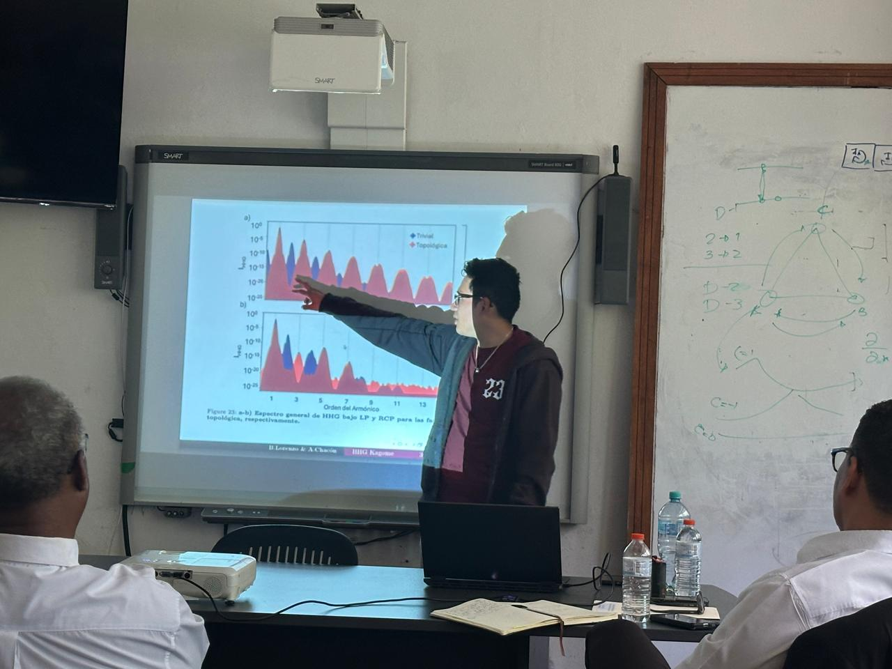

· Licenciatura en Física
Bryan Lorenzo
Espectroscopía de armónicos de alto orden en materiales Kagome topológicos
Formamos a la próxima generación de físicas y físicos de Panamá en la teoría cuántica de la interacción luz–materia.
Tesis sustentadas y aprobadas bajo la dirección del grupo.

Espectroscopía de armónicos de alto orden en materiales Kagome topológicos
Generación de armónicos de alto orden en el semimetal de Weyl TaAs
Las tesis del grupo abordan problemas abiertos de física ultrarrápida y materiales cuánticos, y varias han dado lugar a publicaciones y preprints con los estudiantes como primeros autores.
Ver producción del grupo